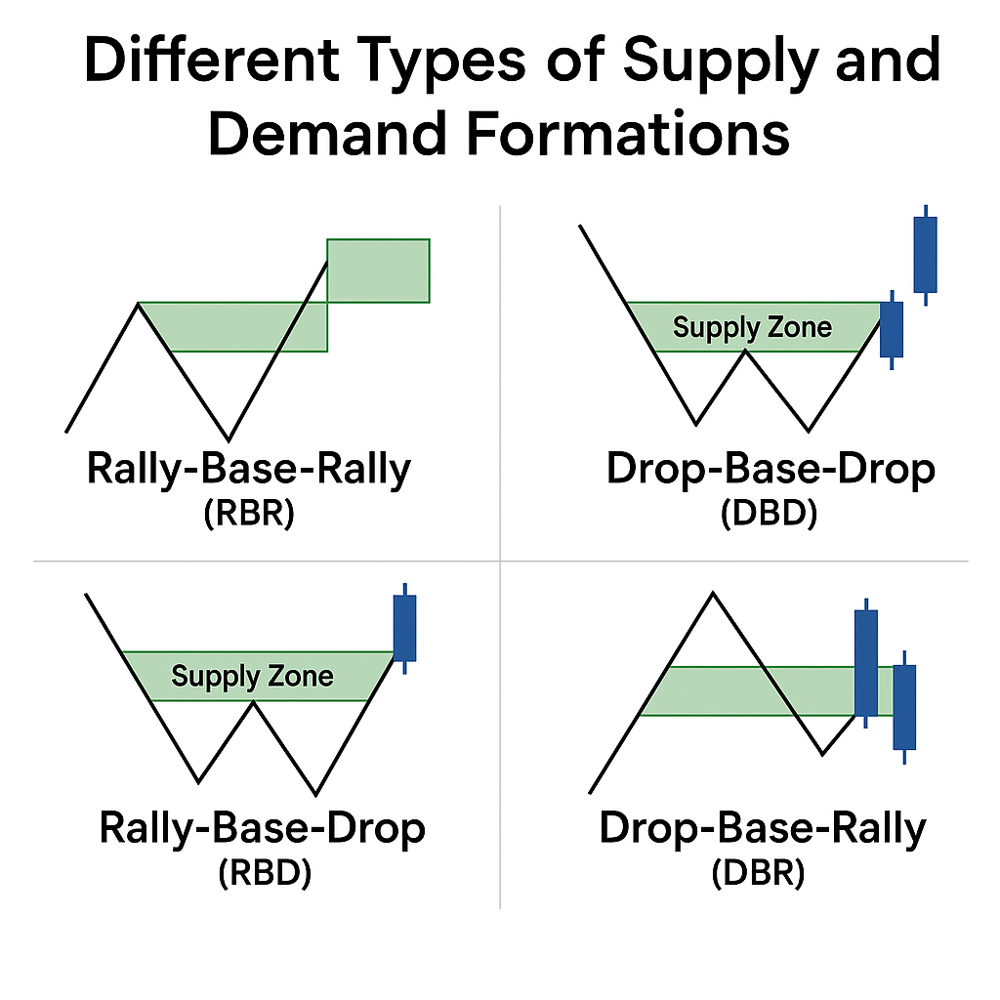

What is Demand and Supply Trading?
Demand and supply trading is a price-action method that identifies zones where purchase (demand) or
selling (supply) pressure was formerly dominant, and assumes that when the price revisits those
zones, similar reactions may occur. In simpler terms:
A demand zone is a price area where buyers previously stepped in aggressively, pushing prices
upward.
A supply zone is a region where sellers overwhelmed buyers, driving prices downward.
These zones represent imbalances moments when supply is not equal to demand. Traders use them to
anticipate reversals, continuations, or re-tests.
This approach is deeply rooted in microeconomic theory (supply & demand) but adapted to market
structure and order-flow dynamics
Demand & supply Basics
Spotting demand and supply zones accurately is the foundation of any price-action-based strategy. A
zone that reflects true order imbalance where large buyers or sellers entered the market often leads
to repeatable trade setups.
Start with Higher Time Frames
A valid demand or supply zone usually forms when the market moves in three stages:
Base: A short period of consolidation or sideways candles showing accumulation or distribution.
Impulse: A strong breakout candle with large range or volume — indicating institutional
participation and order imbalance.
Return: When price revisits that base, it often reacts again, confirming the zone’s validity.
Example:
If the market consolidates near 1.1500, then rallies sharply to 1.1700 — the area between 1.1480 and
1.1520 becomes a demand zone.
Conversely, if the market drops sharply from 1.1700 after consolidation, that area becomes a supply
zone
Identify the Candle Origin and Zone Boundaries
To draw a precise zone:
Demand zone: From the lowest wick of the base candle up to the open of the first bullish impulse
candle.
Supply zone: From the highest wick of the base candle down to the open of the first bearish impulse
candle.
This range captures where buy or sell orders were likely concentrated before price exploded.
Confirm with Volume and Momentum
Volume spikes often confirm genuine order imbalance. When the breakout from the base occurs with
increased volume or strong momentum (long candle bodies, little pullback), it signals large
institutional activity.
Indicators that help:
Volume Profile / VWAP – shows where major trading activity took place.
RSI / MACD – divergence may hint at weakening zones.
ATR – identifies volatility shifts when zones are formed.
Filter Zones by Strength
Filter Zones by Strength
Zone strength criteria may include:
The magnitude and speed of the impulse
Volume or momentum during the breakout
Time spent in the base, shorter is often better
Number of times price revisits or respects the zone
Discard Weak or Contaminated Zones
If price has sliced through a zone easily without reaction, or the zone is overlapped by too much
noise, it’s less reliable. Keep your zone map clean.
Strategies to Trade Demand & Supply
In demand and supply trading, the goal is to trade where big players buy or sell at price zones
showing strong imbalance. Here are the key strategies used by professional traders:
Re-Test (Bounce) Strategy
Wait for price to return to a demand or supply zone and show rejection such as a pin bar or
engulfing candle.
Buy near demand, sell near supply.
Place stop loss just beyond the zone. The first retest of a fresh zone often gives the highest
probability setup.
Breakout and Retest
When price breaks through a zone, it often flips its role:
Broken supply becomes new demand.
Broken demand becomes new supply. Wait for a clean retest and confirmation before entering with the
trend.
Trade with the Trend
Align trades with the overall market direction.
In uptrends, focus on buying at demand zones.
In downtrends, sell at supply zones.
Trend-aligned setups usually provide smoother and safer entries.
Confirmation Entry
Instead of entering blindly, wait for signals like:
Candlestick patterns (pin bar, engulfing)
Volume spike or RSI divergence
This reduces false signals and filters weak zones.
Multi-Timeframe Confluence
Mark zones on higher timeframes (4H or daily) and refine entries on lower charts (15M or 1H).
Combining multiple timeframes gives more precise entries with better risk-reward.

Different Types of Supply and Demand Formations
In demand and supply trading, price movements often form repeatable patterns that reflect how buyers
and sellers interact. These formations help traders visualize market structure and identify
potential reversal or continuation zones. The four key formations are:
Rally–Base–Rally (RBR)
A bullish continuation pattern. Price rallies, pauses briefly (the base), then rallies again. The
base represents temporary consolidation before more buying pressure. Traders mark the base as a
demand zone for potential buy entries when price revisits it.
Drop–Base–Drop (DBD)
A bearish continuation pattern. Price drops, forms a small base, and continues dropping. The base
becomes a supply zone, showing where sellers paused before resuming control. Traders watch for
retests to enter short positions.
Rally–Base–Drop (RBD)
A bearish reversal pattern. Price rallies into a base, stalls, and then drops sharply. The base
marks a strong supply zone, where buyers were absorbed and sellers took over. Often signals the
start of a new downtrend.
Drop–Base–Rally (DBR)
A bullish reversal pattern. Price drops into a base, consolidates, and then rallies upward. The base
becomes a demand zone, showing where selling pressure ended and buyers regained control. Common near
market bottoms or after large corrections.
Recognizing these RBR, DBD, RBD, and DBR formations helps forex traders anticipate future price
reactions more accurately. Each structure reveals the balance between supply and demand, giving
traders insight into where high-probability entries and exits lie.
How to Use Supply and Demand Zones with Other Indicators
While demand and supply zones are powerful on their own, combining them with other technical
indicators can significantly improve accuracy and timing. Indicators help confirm market direction,
identify momentum shifts, and filter false signals.
Moving Averages: Use moving averages (MA, EMA, or SMA) to confirm trend direction. In an
uptrend,
focus on demand zones below the MA for buy entries. In a downtrend, trade supply zones above the MA
for short setups.
RSI (Relative Strength Index): RSI helps detect overbought or oversold conditions near your
zones.
When price approaches a demand zone and RSI shows oversold (<30), it supports a potential bounce.
When price nears a supply zone and RSI is overbought (>70), it confirms likely resistance.
Volume Indicators: Volume reveals how strongly the market reacts to zones. A spike in volume
when price touches a demand zone suggests active buying. Weak volume at a supply zone may hint
that sellers are losing control.
MACD (Moving Average Convergence Divergence): MACD confirms momentum direction and
potential
reversals. A bullish crossover near a demand zone supports long entries. A bearish crossover
near a supply zone reinforces short trades.
Fibonacci Retracement: Fibonacci levels often align with existing demand or supply zones. Zones
that overlap with key retracement levels (38.2%, 50%, 61.8%) are considered stronger. This
confluence helps validate entry points and improve confidence.
Conclusion
Demand and supply trading gives forex traders a clear edge by focusing on where real market
imbalances occur, areas where institutions buy or sell in volume.
Unlike indicator-based systems, this price-action approach helps identify high-probability zones,
reduce noise, and improve timing across currency pairs.
In forex trading, demand and supply zones act as the market’s “footprints,” showing where liquidity
builds and reactions repeat. By combining these zones with confirmation tools, trend direction, and
sound risk management, traders can make more confident and consistent decisions.
Mastering demand and supply trading takes patience, but once understood, it becomes one of the most
reliable frameworks for reading the forex market.
Disclaimer: This content is provided for informational purposes only and does not constitute, and
should not be construed as, financial, investment, or other professional advice. No statement or
opinion contained here in should be considered a recommendation by Ultima Markets or the author
regarding any specific investment product, strategy, or transaction. Readers are advised not to rely
solely on this material when making investment decisions and should seek independent advice where
appropriate